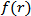
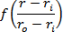

|
|
Mesh Object
This object controls the mesh generation. Several methods/functions to control the automatic mesh generation as well as to define a manual mesh can be found here.
In both cases the major element to control the mesh generator are fixpoints. These fixpoints force the mesh generator to try to position mesh lines through this point. However, it might not always be able to do so, because of concurring settings.
Fixpoints can be accessed via a unique identity number.
MeshType ( enum {"PBA","Staircase","Tetrahedral","Surface", "SurfaceML"} mType )
Sets the type of the mesh.
|
PBA |
Hexahedral mesh with Perfect Boundary Approximation |
|
Staircase |
Hexahedral mesh with staircase cells |
|
Tetrahedral |
Tetrahedral mesh |
|
Surface |
Surface mesh |
|
SurfaceML |
Surface multi layer mesh |
PBAType ( enum {"PBA","Fast PBA"} mType )
Disables or enables the PBA acceleration.
AutomaticPBAType ( bool bFlag )
Disables or enables the automatic PBA mode. If enabled the expert system decides wether to use PBA or FPBA.
LinesPerWavelength ( int value )
This value modifies the mesh generation with regard to the wavelength of the highest frequency set for the simulation. It defines the minimum number of mesh lines in each coordinate direction used for a distance equal to this wavelength. This setting applies to hexahedral grids only.
MinimumLineNumber ( int value )
For backward compatibility purposes only. Use "MinimumStepNumber" instead.
MinimumStepNumber ( int value )
This setting defines a lower limit of the number of mesh lines to be used for the mesh creation, regardless of the settings done using the LinesPerWaveLength method. In fact it defines a maximum distance between two mesh lines for the mesh, by dividing the smallest face diagonal of the calculation box by this number. This setting applies to hexahedral grids only.
RatioLimit ( double value )
This setting forces the mesh module not to overcome an absolute ratio between the maximum distance between two neighboring mesh lines and the minimum distance between two neighboring mesh lines. Please note that this setting holds for the manual mesh as well. If two fixpoints are set too close to another (according to this definition) these fixpoints may not lay on a mesh lines although expected.
UseRatioLimit ( bool bFlag )
Use the ratio limit defined by RatioLimit instead of the smallest mesh step width defined with SmallestMeshStep.
SmallestMeshStep ( double value )
Sets a smallest mesh step width.
StepsPerWavelengthTet ( double value )
This value modifies the mesh generation with regard to the wavelength of the highest frequency set for the simulation. It specifies the maximum length of a mesh edge as a fraction of the wave length. A setting of 4, e.g. specifies a maximum mesh edge length of a quarter of a wave length. This setting applies to tetrahedral grids only.
StepsPerWavelengthSrf ( double value )
This value modifies the mesh generation with regard to the wavelength of the highest frequency set for the simulation. It specifies the maximum length of a mesh edge as a fraction of the wave length. A setting of 4, e.g. specifies a maximum mesh edge length of a quarter of a wave length. This setting applies to surface grids only.
StepsPerWavelengthSrfML ( double value )
This value modifies the mesh generation with regard to the wavelength of the highest frequency set for the simulation. It specifies the maximum length of a mesh edge as a fraction of the wave length. A setting of 4, e.g. specifies a maximum mesh edge length of a quarter of a wave length. This setting applies to multilayer grids only.
MinimumStepNumberTet ( double value )
This setting defines an upper limit of the mesh edge length to be used for the mesh creation, regardless of the settings done using the StepsPerWavelengthTet method. In fact it defines a maximum mesh edge length by dividing the diagonal of the calculation volume by this number. This setting applies to tetrahedral grids only.
MinimumStepNumberSrf ( double value )
This setting defines an upper limit of the mesh edge length to be used for the mesh creation, regardless of the settings done using the StepsPerWavelengthSrf method. In fact it defines a maximum mesh edge length by dividing the diagonal of the calculation volume by this number. This setting applies to surface grids only.
MinimumStepNumberSrfML ( double value )
This setting defines an upper limit of the mesh edge length to be used for the mesh creation, regardless of the settings done using the StepsPerWavelengthSrfML method. In fact it defines a maximum mesh edge length by dividing the diagonal of the calculation volume by this number. This setting applies to multilayer grids only.
Automesh ( bool bFlag )
Switches the automatic mesh generation on (bFlag = True) or off (bFlag = False). Switching off the automatic mesh generation leads to an equidistant mesh. No fixpoints or density points will be set. However, for the equidistant mesh the settings made using RatioLimit, LinesPerWavelength and MinimumStepNumber are still considered. This setting applies to hexahedral grids only.
MaterialRefinementTet ( bool bFlag )
Switches the material-based refinement on (bFlag = True) or off (bFlag = False). This setting is used only for tetrahedral and surface meshing. Refinement settings for hexahedral grids can be accessed via 'SetAutomeshRefinementDielectricsType'.
EquilibrateMesh ( bool bFlag )
If bFlag is set to True the automatic mesh generator tries to create a mesh with smooth transitions between regions of a very dense mesh and regions of a very rough mesh. Such a smooth transition reduces reflections of the fields caused by the mesh. The value used for mesh equilibration can be defined by the function 'EquilibrateMeshRatio'.
EquilibrateMeshRatio ( double value )
Is used to define the value for mesh equilibration. The value is used to create a mesh where the variation between neighboring mesh lengths is less than the defined value. It creates a smooth transition between the smallest and the highest mesh length.
UseCellAspectRatio ( bool bFlag )
If bFlag is set to True the value defined by the function 'CellAspectRatio' will be used to equilibrate the mesh.
CellAspectRatio ( double value )
Defines the maximal threshold for the ratio between two adjacent edges in a cell.
UsePecEdgeModel ( bool bFlag )
Activates (bFlag = True) or deactivates (bFlag = False) the corner correction for PEC edges. This correction uses an analytical model that takes into account that theoretically the fields at PEC edges are singular. By using this model the accuracy of the simulated fields near such edges is increased.
PointAccEnhancement ( double percentage )
Defines the accuracy level to distinguish between two points of the model. Use the default level of 0% for a fast and accurate matrix setup. When you are encountering problems during the meshing process increase this level. An accuracy of 100% means using the highest possible accuracy of the build-in CAD kernel, but slows down the matrix generation.
FastPBAAccuracy ( int value )
Sets the accuracy for PBA acceleration to the given value (0 to 5), however, in general the default setting should not be changed.
Please note that this method has only effect if PBAType is set to "Fast PBA".
FastPBAGapDetection ( bool bFlag )
Enables or disables a more accurate internal geometry representation of non-PEC gaps if the FPBA mesher is used.
FPBAGapTolerance ( double value )
Sets a tolerance value to skip the accuracy enhancement for non-PEC gaps that are smaller than the given value.
AreaFillLimit ( double dValue )
Sets the area fill limit for PBA.
ConvertGeometryDataAfterMeshing ( bool bFlag )
If bFlag is True geometry data is prepared for accurate post-processing at the end of the matrix setup.
ConsiderSpaceForLowerMeshLimit ( bool bFlag )
If bFlag is True then the whole bounding box is considered for the lower mesh limit, otherwise only the structure bounding box is considered.
RatioLimitGovernsLocalRefinement ( bool bFlag )
If bFlag is True local mesh refinement settings are constrained by the ratio limit. Otherwise the local mesh refinement settings are accepted regardless the ratio limit.
Update
Updates the mesh causing a recalculation of the mesh line distribution.
ForceUpdate
This will force a mesh update during a history rebuild. This is needed if you want to access the mesh during a history rebuild (e.g. with function GetClosestPtIndex). Because the function Update will not update the mesh during a history rebuild.
CalculateMatrices
Generates the mesh matrices based on the currently defined geometric structures and the material input.
ViewMeshMode ( bool bFlag )
Activates the mesh mode view if bFlag is True.
SmallFeatureSize ( double value )
All structure features smaller than the given value will be neglected during the surface meshing process. For zero value all details are considered. If the feature suppression leads to an invalid model, the specified value will be decreased automatically in order to obtain a valid model. If this is not successful, an error message will be printed. The SmallFeatureSize method can be used to remove unintended features like sliver faces from the model.
SetParallelMesherMode (enum {"Hex", "Tet" } type, enum {"maximum","user-defined","none"} mode )
Set parallelization mode for a given mesher type. The mesher can either use the maximum number of processors available (maximum), use only a single processor (none) or use the number of processors specified by user (user-defined).
Hex mesher type corresponds to FPBA mesher.
Tet mesher type corresponds to Delaunay volume mesher.
If the FPBA mesher is used the number of processes used in parallel for parts of the matrix calculation is enabled or disabled or set to a user-defined value.
SetMaxParallelMesherThreads ( enum {"Hex", "Tet" } type, int value )
Set number of threads for a given mesher type if user-defined parallelization mode is specified.
Hex mesher type corresponds to FPBA mesher.
Tet mesher type corresponds to Delaunay volume mesher.
Methods for Automatic Fixpoint Generation
AutomeshStraightLines ( bool bFlag )
If bFlag is True the mesh generator will search for straight edges in your structure that are parallel to the mesh lines and will create fixpoints at its ends.
AutomeshEllipticalLines ( bool bFlag )
If bFlag is True this method lets the generator search for any circular or elliptical edge in your model. For every edge found, the mesh generator tries to set a fixpoint in its origin.
AutomeshAtEllipseBounds ( bool bFlag, double factor )
If bFlag is True this method lets the generator search for any elliptical or circular edge in your structure that is parallel to a mesh plane. If the diameter of an edge found is smaller than the port size divided by the to be given factor the mesh generator tries to set fixpoints. The locations of the fixpoints are set are those, where the elliptical/circular edge meets its imaginary rectangular bounding box. This box again must be thought as being aligned parallel to the mesh lines.
AutomeshAtWireEndPoints ( bool bFlag )
If bFlag is True this method lets the generator search for any start or end points of wires and sets fixpoints there.
AutomeshAtProbePoints ( bool bFlag )
Sets mesh control points at probe locataion if bFlag is True.
AutoMeshLimitShapeFaces ( bool bFlag )
If bFlag is True this method limits mesh control points to shapes with less than a given number of faces.
AutoMeshNumberOfShapeFaces ( int number )
If the mesh control points are limited to shapes with less than a given number of faces using AutoMeshLimitShapeFaces the maximum number of faces is set here.
MergeThinPECLayerFixpoints ( bool bFlag )
If bFlag is True this method avoids that two very close mesh lines on thin PEC sheets are created.
AutomeshFixpointsForBackground ( bool bFlag )
If bFlag is True fixpoints and densitypoints are created for the background calculation domain material. If bFlag is set to False, the background material will not be considered for the mesh generation.
AutomeshRefineAtPecLines ( bool bFlag, int factor )
At PEC edges the electromagnetic fields theoretically are singular. This means, that the fields vary very much near such edges and have to be sampled higher than elsewhere. If bFlag is True density points are added to fixpoints that are already set at PEC edges by the automatic mesh generator. These density points force the automatic mesh generator to increase the mesh density at those points by the given factor.
The behavior of the generator is slightly different if the fixpoints are located on a straight or an elliptical line. For straight lines the mesh lines of the two perpendicular coordinate directions are influenced. For elliptical lines this is the case only for the normal direction of the area that is defined by the edge.
AutomeshRefinePecAlongAxesOnly ( bool bFlag )
Refines mesh only along axes if bFlag is True.
SetAutomeshRefineDielectricsType ( enum{"None", "Wave", "Static"} refineDielectricsType )
This method adjusts the mesh density for dielectric materials if refineDielectricsType is not "None".
If refineDielectricsType is "Wave" the density for solids consisting of dielectric material is adjusted in a way, that the influence of the material on the wavelength is taken into account.
If high dielectric / permeable materials are involved in a low frequency calculation the wavelength refinement would cause an unnecessary fine mesh. Therefore a special low frequency refinement is available. Use "Static" for the refineDielectricsType argument in this case.
This method applies to hexahedral grids only. For tetrahedral and surface meshing the method 'MaterialRefinementTet' is available.
AutomeshFixpointsForBackground ( bool bFlag )
If bFlag is True fixpoints and densitypoints are created for the background calculation domain material. If bFlag is set to False, the background material will not be considered for the mesh generation.
Methods for Tetrahedral and Surface Meshes
SurfaceMeshGeometryAccuracy ( double value )
Sets the tolerance for the generation of the non-manifold simulation model. If the defined or imported geometry is less accurate than the default tolerance 1e-6, it is recommended to select a larger tolerance. Otherwise artificial shapes might arise or the model preparation might fail.
SurfaceMeshMethod ( enum {"General","Fast"} mType )
Sets the type of the method used for the surface mesh generation. If a volume meshing method is defined as well, note that the Fast surface meshing can be combined only with the Delaunay mesher. The General surface mesher is suited for general purpose problems and for adaptive mesh refinements. The Fast surface mesher is suited in particular for complex structures with many geometrical faces.
SurfaceTolerance ( double value )
The surface tolerance is the distance between the mesh face and the part of the surface it is representing. By setting this value, the user specifies how accurately the mesh faces represent the surface. It is desirable to provide surface tolerance when mesh faces obtained with normal tolerance do not represent the surface well.
SurfaceToleranceType ( enum {"Relative","Absolute"} mType )
Specifies whether the surface tolerance is given as a relative or absolute value.
Relative means that a surface tolerance is used which is independent of the model size; i.e. the given number is multiplied by a fraction (for example, 1/500th) of the diagonal of the bounding box of the body. For example, when the SurfaceTolerance is set to 10 with SurfaceToleranceType "Relative", then 1/50th of the length of the diagonal is used as the actual surface tolerance. Increasing the surface tolerance results in coarser and fewer mesh faces, whereas decreasing the surface tolerance results in finer and more mesh faces. If the scale of the model grows (or shrinks), the pattern and the number of mesh faces remain the same, but the size of the mesh faces grows (or shrinks).
Absolute means that the value is used as specified.
When the value of surface tolerance is 0, this value is ignored for surface meshing.
NormalTolerance ( double value )
The normal tolerance is the angle between the surface normals at the two adjacent nodes of a mesh face. By setting this normal deviation refinement, the user specifies how accurately the facets are representing the surface and the quality of rendering desired. It is desirable to use this refinement control because it is independent of the model size.
AnisotropicCurvatureRefinementFSM ( bool bFlag )
This setting specifies whether the curvature based refinement for the fast surface meshing method is anisotropic or not. Anisotropic refinement means, e.g., that a cylindrical surface will refine along circumference only. This may be useful if a small number of elements is intended. Note that anisotropic refinement may increase the meshing time. By default, no anisotropic refinement is performed.
SurfaceMeshEnrichment ( int level )
The fast surface meshing method works in two steps. First an initial triangulation is generated which resolves the geometry adequately and takes the user-defined mesh sizes into account. Then the initial triangulation is remeshed in order to improve the mesh quality for computational purposes.
Four different options are available. If the user-defined mesh size is much larger than the geometry dimensions (edge lengths, curvatures) the resulting mesh will depend strongly on the selected remeshing option. If the user defined mesh size is much smaller than the geometry dimensions the resulting meshes will be similar.
level = 0: By default, level is set zero meaning that the quality of the initial triangulation is improved by optimization and by removing or adding points and edges. This mesh option is more time consuming than the others options, but controls the mesh quality automatically.
level = 1: If level is set one the quality of the initial triangulation is improved by optimization and decimation. This is faster than using decimation and enrichment (level = 0). However, the quality is not completely controlled automatically. By decimation of the initial triangulation it is possible to remove for instance singular mesh points in the initial triangulation, e.g. the poles of spheres which are surrounded by many triangles with low aspect ratio. On the other hand it is not possible to improve the quality in general since no additional mesh points will be inserted.
level = 2: A simple mesh improvement will be performed when level is set two. The initial triangulation is then only modified by topological optimization like edge swapping in order to improve the quality. This meshing method is even faster than decimation and enrichment (level = 0). However, since no mesh points are removed or added the element quality of the initial triangulation can only be slightly improved.
level = 3: If level is set three, the initial triangulation is left unmodified and will be used as surface mesh. This is the fastest meshing method, but there is no automatic control of the mesh quality. This option might be useful if the model geometry is already defined by a triangulation for computational purposes, for instance if the NASTRAN import has been used. In this case a surface mesh is generated that is usually very similar or identical to the original mesh. Another typical application is to generate meshes with very good and regular geometry description while controlling the quality of the triangles by setting appropriate local mesh densities..
SurfaceOptimization ( bool bFlag )
This method specifies whether the surface mesh along the faces of the structure should be optimized in order to obtain higher quality meshes. Surface optimization should usually be applied.
SurfaceSmoothing ( int level )
This method specifies how much smoothing should be performed for the surface mesh. Valid settings are numbers between 0 and 6, where 0 deactivates smoothing and 6 means maximum smoothing. Please note that by increasing this number, the mesh quality will become slightly better, but mesh smoothing is slows down the mesh generation.
CurvatureRefinementFactor ( double value )
This method specifies how accurately curves structure edges should be sampled by mesh edges. This parameter specifies an upper limit for the maximum distance of the structure edge from the corresponding mesh edge divided by the length of the mesh edge. The smaller this value, the more accurate the curved structure edges are sampled. Please note that small settings provide a good approximation of structure edges, but also result in large numbers of tetrahedrons. Please note that this setting applies only to structure edges, but not to faces of the structure.
MinimumCurvatureRefinement ( double value )
This factor specifies the maximum refinement which can be achieved due to the CurvatureRefinementFactor setting. Some geometries (like the tip of a cone) correspond to extremely large curvatures. This in turn would result in very dense meshes due to the curvature refinement if not limited otherwise. This limit specifies how much the curvature refinement must refine the mesh around geometric singularities. A setting of e.g. 30 allows a 30-fold refinement due to curvature refinement settings. In order to allow at least a little refinement in the mesh, this setting must be at least 2.0.
AnisotropicCurvatureRefinement ( bool bFlag )
This setting specifies whether the curvature based refinement for the general surface meshing method is anisotropic or not. Anisotropic refinement means, e.g., that a cylindrical surface will refine along circumference only. This may be useful if a small number of elements is intended. Note that anisotropic refinement may increase the meshing time. By default, no anisotropic refinement is performed.
VolumeOptimization ( bool bFlag )
This method is available for the Advancing Front meshing method. It specifies whether the volume mesh inside the solids should be optimized in order to obtain higher quality meshes. Volume optimization should usually be applied.
The flag will be ignored for surface meshes.
VolumeSmoothing ( bool bFlag )
This method is available for the Advancing Front meshing method. It specifies whether the volume mesh should be smoothened or not. Please note that by activating volume smoothing, the mesh quality will become slightly better, but mesh smoothing is slows down the mesh generation. However, volume smoothing should usually be applied.
The flag will be ignored for surface meshes.
DensityTransitions ( double value )
This method is available for the Advancing Front meshing method. It specifies a factor between 0 and 1.0 which determines how rapid the transition of the mesh densities between fine and coarse mesh regions should be. A setting of 1.0 corresponds to very smooth transitions whereas a setting of 0.0 forces the mesh to change its density quickly. Smooth transitions will usually provide better quality meshes but will also result in larger numbers of tetrahedrons.
The value will be ignored for surface meshes.
VolumeMeshMethod ( enum {"Delaunay","Advancing Front"} mType )
Sets the type of the volume meshing method.
DelaunayOptimizationLevel ( int value )
This method is available for the Delaunay meshing method. It takes a value between 0 and 5 specifying the performance of optimization sweeps. The higher the value the more optimization sweeps will be performed. The CPU time may also increase. The default setting is 0, i.e. no optimization sweeps are performed.
DelaunayPropagationFactor ( double value )
This method is available for the Delaunay meshing method. It specifies how the mesh density propagates from the surface into the volume. The value 1.0 indicates that the mesh density of the surface mesh is used. A value between 0.8 and 1.0 means that the mesh is slightly finer than the surface mesh. For values larger than 1.0, the mesh becomes coarser as it gets farther from the surface. The larger the value the stronger the effect. For the coarsest possible mesh, however, specify the value 0.0. In this case, all constraints on the mesh density are ignored. The default setting is a slight coarsening while propagating into the volume.
SnapToSurfaceMesh( string file_in, string file_out )
The objective of this method is to project a given set of points to the surface mesh.
The input is the name file_in of a file containing the list of points to be projected. This list has 3 columns, specifying the x-, y-, z-coordinates of each data point.
The output is the name file_out of the file with the projected the data.
SelfIntersectingCheck ( bool bFlag )
This method specifies whether a self-intersection check for the model surfaces will be done. This is enabled by default. This option might be disabled for imported structures for surface or multilayer mesh. Further more it can be disabled for tetrahedral, surface or multilayer mesh if you want to mesh a structure and you are sure there exist no self-intersecting faces in the model.
Methods for Manual Fixpoint Generation
FindFixpointFromPosition ( double x, double y, double z ) int
Returns the identity number of the fixpoint located at the given coordinates. If no fixpoint could be found, zero will be returned.
AddFixpoint ( double x, double y, double z )
Sets a new fixpoint at the given position.
RelativeAddFixpoint ( int id, double dx, double dy, double dz )
Adds a fixpoint relative to the fixpoint referenced by id.
DeleteFixpoint ( int id )
Deletes the fixpoint with identification number id. The id can be obtained from positions using the FindFixpointFromPosition method.
AddIntermediateFixpoint ( int id1, int id2, int nadd )
Adds nadd fixpoints between the fixpoints indexed by id1 and id2. id1 and id2 can be obtained from positions using the FindFixpointFromPosition method.
AddAutomeshFixpoint ( bool useX, bool useY, bool useZ, double x, double y, double z )
Adds an absolute automesh fixpoint at the given position (x, y, z). The fixpoint is actually set as fixed only for those directions where the corresponding useX, useY or useZ flag is set to True.
DeleteAutomeshFixpoint ( double x, double y, double z )
Deletes an absolute automesh fixpoint at the given position.
ModifyAutomeshFixpointFromId ( bool useX, bool useY, bool useZ, int id )
Modifies a automesh fixpoint referenced by id. The fixpoint is set as fixed only for those directions where the corresponding useX, useY or useZ flag is set to True.
AddAutomeshFixpointFromId ( bool useX, bool useY, bool useZ, enum pickType, solidname shapeName, int id, int faceId, int number ) int
Adds an automesh fixpoint with the given pick id. This method returns the identity number of the added fixpoint. The parameter id is the pick id. If it is not valid, zero will be returned. The fixpoint is set as fixed only for those directions where the corresponding useX, useY or useZ flag is set to True. The pickType argument denotes the type of the pick. It is described in the table below. The shapeName denotes the shape the point belongs to. If the pickType is "CircleEndpoint" the faceid is the pick id of the face, the number is the number of the circle point.
pickType can have one of the following values:
|
Midpoint |
Midpoint of an edge. |
|
Facecenter |
Center of a face. |
|
Centerpoint |
Center of a circle. |
|
Endpoint |
A vertex. |
|
CircleEndpoint |
A vertex of circle. |
|
Circlepoint |
Starpoint of a circle. |
DeleteAutomeshFixpointFromId ( int id )
Deletes an automesh fixpoint with the given id.
Methods for Spatially Varying Material Geometry Generation
A spatially varying material exhibits varying properties according to a function of radius - in case of spherical structure - or of the distance to an axis - in case of cylindrical structure (see also Spatially Varying Materials in the Material Object page). The following methods help defining the space dependency type of a shape (e.g. spherical or cylindrical) and the other relevant geometrical information for a complete setup of the spatially varying material shape.
The setup information (i.e. the coordinate system type, the spherical system center or cylindrical axis respectively, and the minimum and maximum scaling radius) is automatically detected during the modeling. All the values are then displayed and provided to the user in the Messages box. In case of special geometrical configuration or in case of complex / intersecting objects it is also possible to provide this information manually with the following VBA commands.
ClearSpatialVariation
Removes the spatial variation and its related geometrical setup from every shape.
ClearSpatialVariationForShape ( solidname shapeName )
Removes the spatial variation and its related geometrical setup from the selected shape.
SetSpatialVariationTypeForShape ( solidname shapeName, enum {"none", "spherical", "curve" } type )
Specifies the geometric dependency type for the selected shape.
The type "none" corresponds to no space dependency and is equivalent to the ClearSpatialVariationForShape method.
The type "spherical" corresponds to a radial dependency on the origin of a spherical coordinate system. This may be used for instance to define a dependency on a sphere, setting the coordinate system origin exactly on the sphere center.
The type "curve" corresponds a radial space dependency on the reference axis of a cylindrical coordinate system. This may be used for instance to define a dependency on an optical fiber, setting the reference axis exactly on the fiber axis. Note anyway that the type "curve" is extremely flexible and allows attaching the reference axis to a general curve or spline in order to accomplish also a more general and complex class of solid of revolution.
AddSpatialVariationCenterForShape ( solidname shapeName, double centerX, double centerY, double centerZ )
Specifies the origin of the spherical coordinate system in case of a "spherical" type selected with the SetSpatialVariationTypeForShape method.
Multiple successive applications of the command may also be used to specify the curve / line path for the reference axis in case of a "curve" type selected with the SetSpatialVariationTypeForShape method.
SetSpatialVariationInnerRadiusForShape( solidname shapeName, double ri )
SetSpatialVariationOuterRadiusForShape( solidname shapeName, double ro )
A spatially varying material (see also Spatially Varying Materials in the Material Object page) is specified by a method

which defines how its properties vary. The function domain is normalized within the [0, 1] range where typically 0 corresponds to the sphere center (or the cylindrical axis) and 1 the structure surface.The methods allow to specify for the selected shape the scaling factor for the inner and outer radius and therefore the final connection between material and geometry. This means that for the computation the scaled function

will be evaluated and used. Negative or greater than 1 values of the function argument are extrapolated to 0 and 1, respectively.
AddSpatialVariationFromCurve ( solidname shapeName, curvename curveName, double ri, double ro )
This is a convenience method in order to perform automatically the complete connection between solid and curve in a cylindrical coordinate system when a "curve" type is selected with the SetSpatialVariationTypeForShape method.
The method can be called as soon as the solid and the curve are defined and must be executed as a control macro with the VBA macro editor. It will automatically - and adequately - sample the axis curve and will insert in the history list AddSpatialVariationCenterForShape commands evaluated on the sampling points (p1, p2 ... pn).
The inner and outer radius are stored in the history with the command SetSpatialVariationInnerRadiusForShape and SetSpatialVariationOuterRadiusForShape and acts as scaling factor for the material function .
Globally the macro will generate and store in the history list the following VBA commands:
With Mesh
.ClearSpatialVariationForShape("shapeName")
.SetSpatialVariationTypeForShape("shapeName", "curve")
.AddSpatialVariationCenterForShape("shapeName", "p1_x", "p1_y", "p1_z")
.AddSpatialVariationCenterForShape("shapeName", "p2_x", "p2_y", "p2_z")
...
.AddSpatialVariationCenterForShape("shapeName", "pn_x", "pn_y", "pn_z")
.SetSpatialVariationRadiusForShape("shapeName", "ri")
.SetSpatialVariationOuterRadiusForShape("shapeName", "ro")
End With
Queries for Mesh Positions and Indices
GetNp int
Returns the total number of mesh nodes used.
GetXPos ( int meshPointIndex ) double
GetYPos ( int meshPointIndex ) double
GetZPos ( int meshPointIndex ) double
Returns the position of the normal mesh node of index meshNodeIndex in the respective direction.
GetClosestPtIndex ( double valueX, double valueY, double valueZ ) int
Returns the index of the normal mesh node closest to the given spatial point.
Queries for Critical Cells and Areas
GetNumberOfCriticalCells int
Returns the quantity of critical cells occurring in the current mesh structure. Critical cells are nearly completely filled by an ideal electric conductor so that they will be fulfilled completely by this material.
GetNumberOfCriticalAreas int
Returns the quantity of critical areas occurring in the current mesh structure. Critical areas are nearly completely filled by an ideal electric conductor so that they will be fulfilled completely by this material.
GetCriticalCellFromIndex ( long index, long_ref icell )
This method deals with critical cells occurring in the current mesh structure. Critical cells are nearly completely filled by an ideal electric conductor so that they will be fulfilled completely by this material. The cell index of a critical cell regarding the size of the mesh (which can be determined using GetNx, GetNy and GetNz) is stored in icell for the critical cell number index+1.
GetCriticalAreaFromIndex ( long index, long_ref iarea, long_ref inormal )
This method deals with critical cells occurring in the current mesh structure. Critical cells are nearly completely filled by an ideal electric conductor so that they will be fulfilled completely by this material. The area index of a critical area regarding the size of the mesh (which can be determined using GetNx, GetNy and GetNz) is stored in iarea for the critical cell number index+1. The normal index to this area is stored in inormal.
GetMeshType enum
Returns the currently chosen mesh type. The return value may be one of the types which are specified in MeshType.
IsFPBAUsed long
Returns 1 if the FPBA mesher is used else 0
IsFastPBAGapDetection bool
Returns "True" if the FPBA accuracy enhancement for non-PEC gaps is activated.
GetFPBAGapTolerance double
Returns the tolerance value used for the FPBA accuracy enhancement for non-PEC gaps.
GetAreaFillLimit double
Returns the area fill limit for PBA.
GetMinimumEdgeLength double
Returns the minimum edge length of the currently chosen mesh.
GetMaximumEdgeLength double
Returns the maximum edge length of the currently chosen mesh.
GetSurfaceMeshArea double
Returns the total area of surface mesh. Returns zero if the mesh type is other than "Surface" or if no mesh is present.
GetNumberOfMeshCells long
Returns the total number of mesh cells (may be either hexahedral elements or tetrahedrons).
GetNumberOfMeshCellsMetrics long
Similar to GetNumberOfMeshCells query, however, in case of hexahedral subgridding the original metric mesh cell number is returned.
GetParallelMesherMode (enum {"Hex", "Tet" } type) enum
Depending on the used parallelization mode returns either "maximum", "user-defined" or "none" for a given mesher type.
Hex mesher type corresponds to FPBA mesher.
Tet mesher type corresponds to Delaunay volume mesher.
GetMaxParallelMesherThreads (enum {"Hex", "Tet" } type) long
Returns the number of processes to use for the user-defined parallelization mode and a given mesher type.
Hex mesher type corresponds to FPBA mesher.
Tet mesher type corresponds to Delaunay volume mesher.
The given values refer to High Frequency simulations and might differ for Low Frequency setup.
MeshType ("PBA")
PBAType ("PBA")
LinesPerWavelength (10)
MinimumStepNumber (10)
RatioLimit (10)
UseRatioLimit (True)
SmallestMeshStep (0.0)
Automesh (True)
EquilibrateMesh (False)
UsePecEdgeModel (True)
PointAccEnhancement (0)
ConvertGeometryDataAfterMeshing (True)
AutomeshStraightLines (True)
AutomeshEllipticalLines (True)
AutomeshAtEllipseBounds (True, 10)
AutomeshAtWireEndPoints (True)
AutomeshAtProbePoints (True)
AutoMeshLimitShapeFaces (True)
AutoMeshNumberOfShapeFaces (1000)
MergeThinPECLayerFixpoints (False)
AutomeshFixpointsForBackground (True)
AutomeshRefineAtPecLines (True, 2)
AutomeshRefinePecAlongAxesOnly (False)
SetAutomeshRefineDielectricsType ("Wave")
SurfaceMeshMethod ("General")
SurfaceTolerance (1.0)
SurfaceToleranceType ("Relative")
NormalTolerance (15.0)
EnrichSurfaceMesh (True)
SurfaceOptimization (True)
SurfaceSmoothing (3)
MinimumCurvatureRefinement (30)
CurvatureRefinementFactor (0.05)
AnisotropicCurvatureRefinement (False)
VolumeOptimization (True)
VolumeSmoothing (True)
VolumeMeshMethod ("Delaunay")
DensityTransitions (0.5)
StepsPerWavelengthTet (4)
MinimumStepNumberTet (10)
FastPBAAccuracy (3)
SmallFeatureSize (0.0)
EquilibrateMesh (False)
EquilibrateMeshRatio (1.19)
UseCellAspectRatio (False)
CellAspectRatio (50.0)
SelfIntersectionCheck (True )
Dim refinePEC As Integer
refinePEC = 6
With Mesh
.AutomeshStraightLines (True)
.AutomeshEllipticalLines (True)
.AutomeshRefineAtPecLines (True, refinePEC)
.AutomeshRefinePecAlongAxesOnly (False)
.AutomeshAtEllipseBounds (True, 10)
.AutomeshAtWireEndPoints (True)
.AutomeshAtProbePoints (True)
.SetAutomeshRefineDielectricsType ("Wave")
.MergeThinPECLayerFixpoints (True)
.EquilibrateMesh (False)
.EquilibrateMeshRatio (1.19)
.UseCellAspectRatio (False)
.CellAspectRatio (50.0)
.UsePecEdgeModel (True)
.MeshType ("PBA")
.AutoMeshLimitShapeFaces (True)
.AutoMeshNumberOfShapeFaces (1000)
.PointAccEnhancement (50)
.SurfaceOptimization (True)
.SurfaceSmoothing (3)
.MinimumCurvatureRefinement (30)
.CurvatureRefinementFactor (0.05)
.VolumeOptimization (True)
.VolumeSmoothing (True)
.DensityTransitions (0.5)
.ConvertGeometryDataAfterMeshing (True)
.AutomeshFixpointsForBackground (True)
.UseRatioLimit (True)
.RatioLimit (15)
.LinesPerWavelength (25)
.Automesh (True)
End With
| CST Studio Suite 2022 |
|